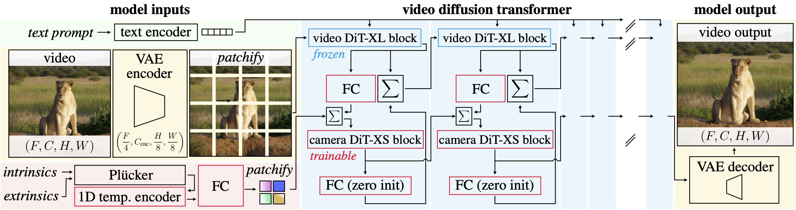

In this work, we analyze camera motion from a first principles perspective, uncovering insights that enable precise 3D camera manipulation without compromising synthesis quality. First, we determine that motion induced by camera movements in videos is low-frequency in nature. This motivates us to adjust train and test pose conditioning schedules, accelerating training convergence while improving visual and motion quality. Then, by probing the representations of an unconditional video diffusion transformer, we observe that they implicitly perform camera pose estimation under the hood, and only a sub-portion of their layers contain the camera information. This suggested us to limit the injection of camera conditioning to a subset of the architecture to prevent interference with other video features, leading to 4x reduction of training parameters, improved training speed and 10% higher visual quality. Finally, we complement the typical dataset for camera control learning with a curated dataset of 20K diverse dynamic videos with stationary cameras. This helps the model disambiguate the difference between camera and scene motion, and improves the dynamics of generated pose-conditioned videos. We compound these findings to design the Advanced 3D Camera Control (AC3D) architecture, the new state-of-the-art model for generative video modeling with camera control.
VDiT-CC model with ControlNet camera conditioning built on top of VDiT. Video synthesis is performed by large 4,096-dimensional DiT-XL blocks of the frozen VDiT backbone, while VDiT-CC only processes and injects the camera information through lightweight 128-dimensional DiT-XS blocks (FC stands for fully-connected layers).

@article{bahmani2024ac3d,
author = {Bahmani, Sherwin and Skorokhodov, Ivan and Qian, Guocheng and Siarohin, Aliaksandr and Menapace, Willi and Tagliasacchi, Andrea and Lindell, David B. and Tulyakov, Sergey},
title = {AC3D: Analyzing and Improving 3D Camera Control in Video Diffusion Transformers},
journal = {arXiv preprint arXiv:2411.18673},
year = {2024},
}